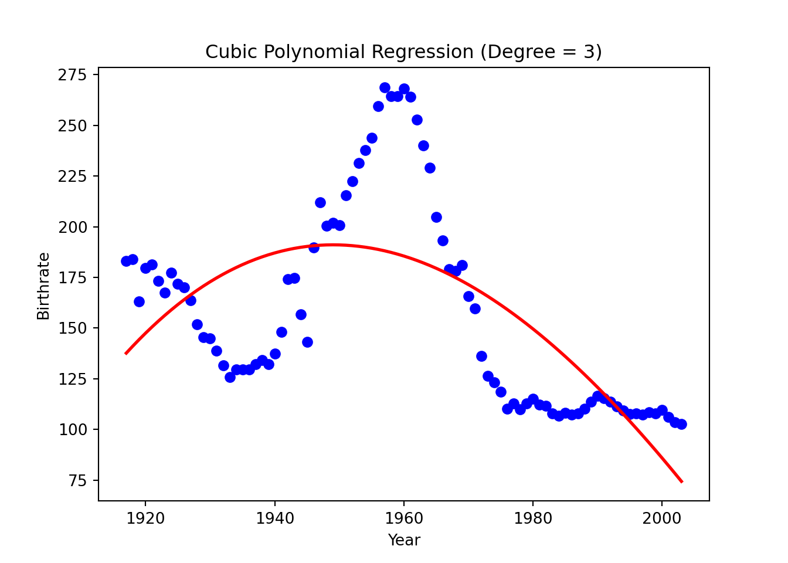
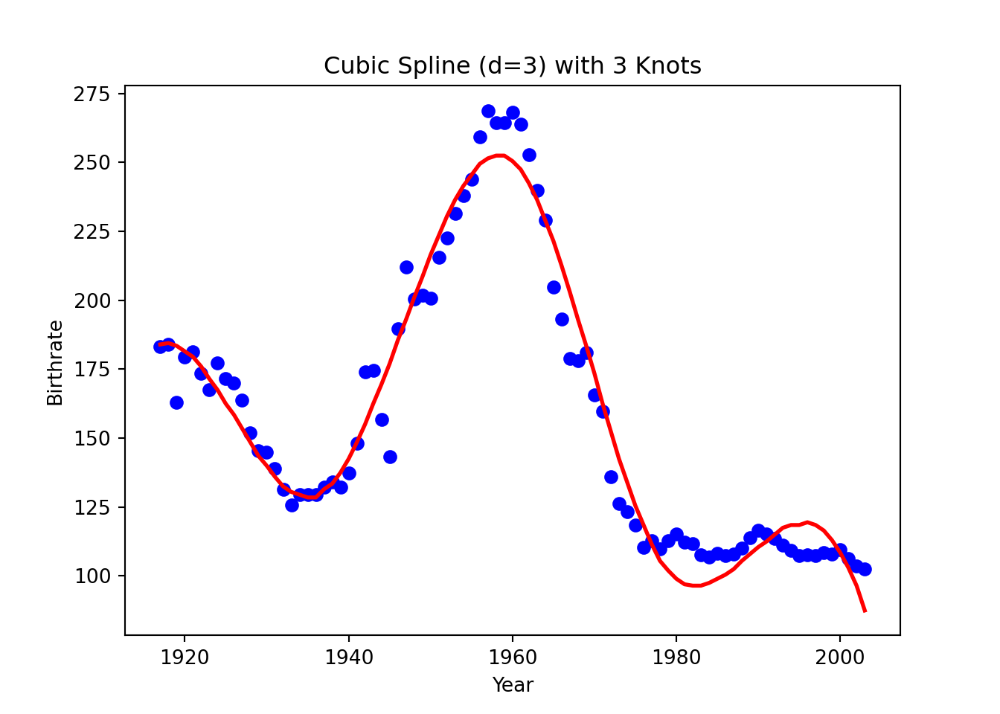
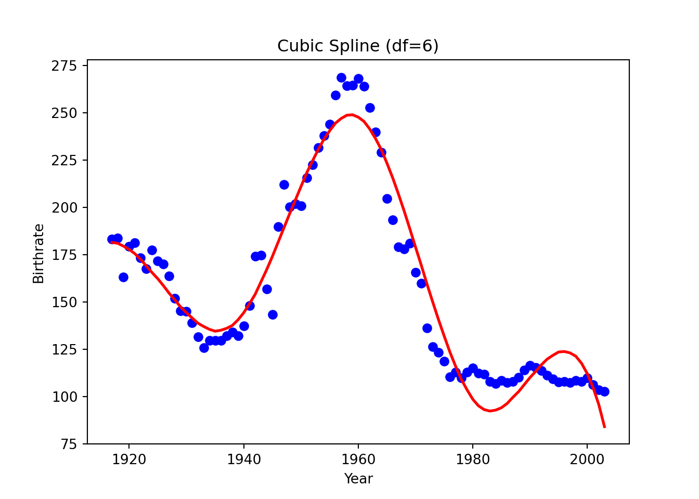
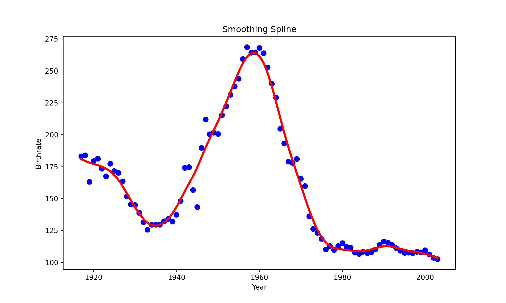
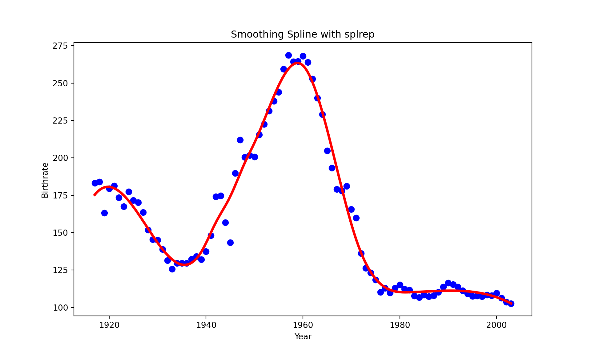
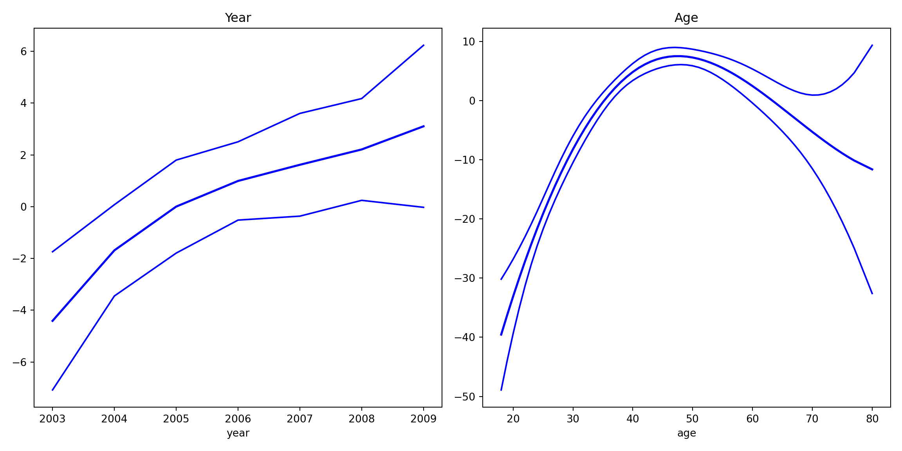
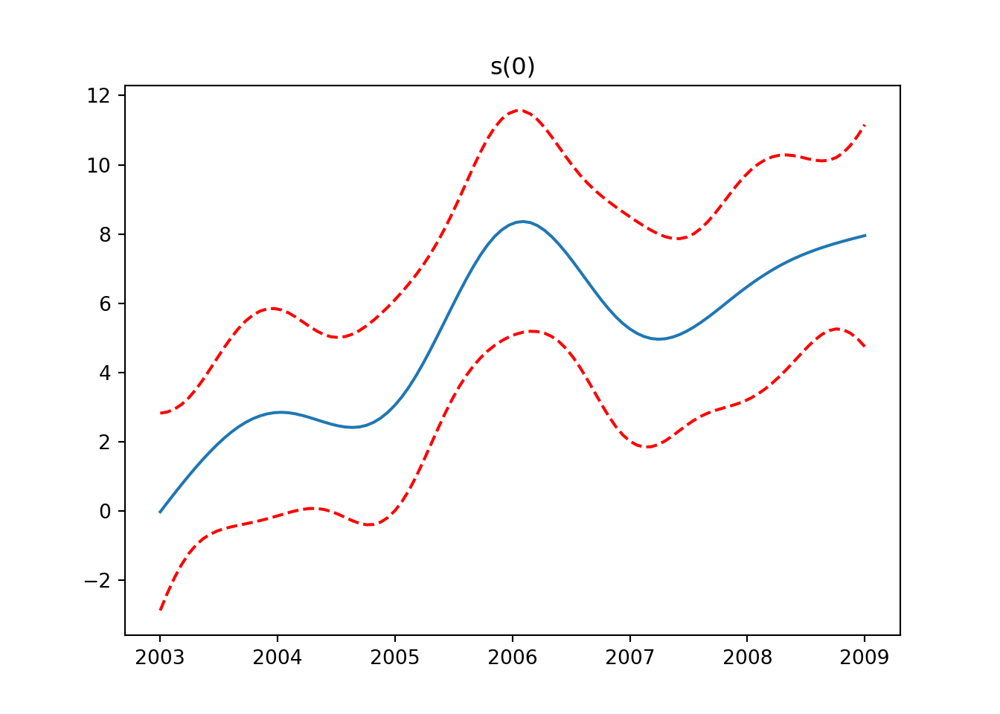
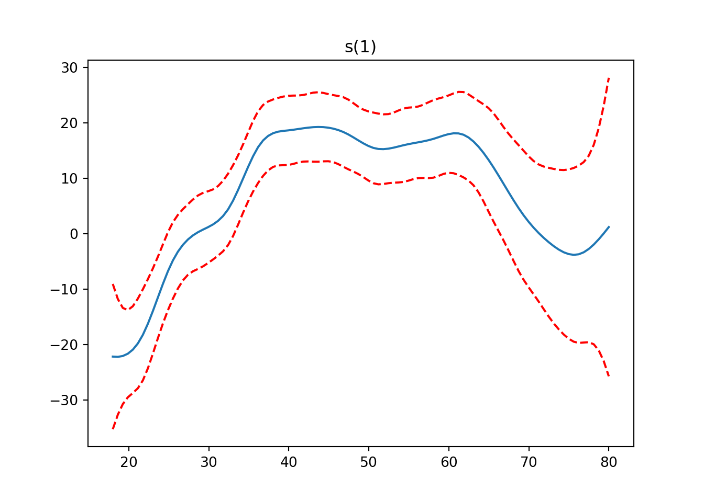
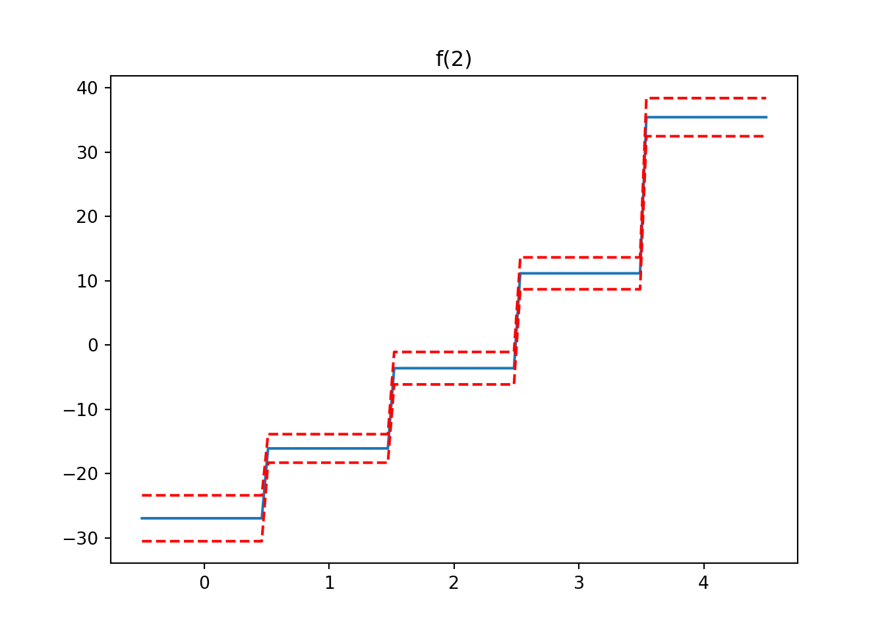

Show/Hide
birthrates <- read.csv("../data/birthrates.csv")birthrates <- read.csv("../data/birthrates.csv")library(splines)For linear splines, change degree = 3 to degree = 1.
import pandas as pd
import numpy as np
import matplotlib.pyplot as pltbirthrates = pd.read_csv("../data/birthrates.csv")from sklearn.linear_model import LinearRegression
from sklearn.preprocessing import PolynomialFeaturesbirthrates['Year_centered'] = birthrates['Year'] - birthrates['Year'].mean()
# Polynomial regression with degree = 3
poly = PolynomialFeatures(degree=3, include_bias=False)
X_poly = poly.fit_transform(birthrates[['Year_centered']])
polyfit3 = LinearRegression().fit(X_poly, birthrates['Birthrate'])
plt.scatter(birthrates['Year'], birthrates['Birthrate'], color='blue')
plt.plot(birthrates['Year'], polyfit3.predict(X_poly), color='red',
linewidth=2)
plt.title("Cubic Polynomial Regression (Degree = 3)")
plt.xlabel("Year")
plt.ylabel("Birthrate")
plt.show()
from patsy import dmatrix
from sklearn.linear_model import LinearRegressionFor linear splines, change degree=3 to degree=1.
NOTE:
Can’t find prediction or extrapolation for cubic splines.
Use patsy.cr() to fit natural cubic splines.
knots = [1936, 1960, 1978]
# https://patsy.readthedocs.io/en/latest/API-reference.html
# Generate cubic spline basis functions with specified knots
spline_basis = dmatrix(
"bs(Year, degree=3, knots=knots, include_intercept=True)",
{"Year": birthrates["Year"]},
return_type="dataframe"
)
# Fit the cubic spline model
# import statsmodels.api as sm
# model = sm.OLS(birthrates["Birthrate"], spline_basis).fit()
# birthrates["Fitted"] = model.fittedvalues
cub_sp = LinearRegression().fit(spline_basis, birthrates["Birthrate"])
# Plot the data and the fitted spline
plt.scatter(birthrates["Year"], birthrates["Birthrate"], color="blue")
plt.plot(birthrates["Year"], cub_sp.predict(spline_basis), color="red",
linewidth=2)
plt.title("Cubic Spline (d=3) with 3 Knots")
plt.xlabel("Year")
plt.ylabel("Birthrate")
plt.show()
# https://patsy.readthedocs.io/en/latest/API-reference.html
# Generate cubic spline basis functions with specified knots
spline_basis = dmatrix(
"bs(Year, degree=3, df=7, include_intercept=True)",
{"Year": birthrates["Year"]},
return_type="dataframe"
)
# Fit the cubic spline model
# import statsmodels.api as sm
# model = sm.OLS(birthrates["Birthrate"], spline_basis).fit()
# birthrates["Fitted"] = model.fittedvalues
cub_sp = LinearRegression().fit(spline_basis, birthrates["Birthrate"])
# Plot the data and the fitted spline
plt.scatter(birthrates["Year"], birthrates["Birthrate"], color="blue")
plt.plot(birthrates["Year"], cub_sp.predict(spline_basis), color="red",
linewidth=2)
plt.title("Cubic Spline (df=6)")
plt.xlabel("Year")
plt.ylabel("Birthrate")
plt.show()
We use scipy.interpolate.make_smoothing_spline.
Python has no functions for smoothing splines that can directly specify the degrees of freedom. Please let me know if you find one.
To have similar smoothing results, R and Python would use quite a different size of penalty term \(\lambda\), as well as the degrees of freedom and smoothing factor.
from scipy.interpolate import make_smoothing_splinex = birthrates["Year"].values
y = birthrates["Birthrate"].values
spline = make_smoothing_spline(x, y, lam=20)
# Predict for the range of years
x_pred = np.linspace(1917, 2003, 500)
y_pred = spline(x_pred)
# Plot the original data
plt.figure(figsize=(10, 6))
plt.scatter(x, y, color='blue', label='Data', s=50)
plt.plot(x_pred, y_pred, color='red', linewidth=3, label='Smoothing Spline')
plt.title("Smoothing Spline")
plt.xlabel("Year")
plt.ylabel("Birthrate")
plt.show()
To use a smoothing factor, use splrep (make_splrep) and BSpline
The smoothing factor is set unresonably high to 4500. Please let me know if you figure out why.
from scipy.interpolate import splrep, BSplinex = birthrates["Year"].values
y = birthrates["Birthrate"].values
# Fit the smoothing spline with a smoothing factor
smoothing_factor = 4500 # Adjust this for the desired smoothness
tck = splrep(x, y, s=smoothing_factor)
# Predict for a range of years
x_pred = np.linspace(1917, 2003, 500)
y_pred = BSpline(*tck)(x_pred)
# Plot the original data
plt.figure(figsize=(10, 6))
plt.scatter(x, y, color='blue', label='Data', s=50)
# Plot the fitted smoothing spline
plt.plot(x_pred, y_pred, color='red', linewidth=3, label='Smoothing Spline')
# Add labels and title
plt.title("Smoothing Spline with splrep")
plt.xlabel("Year")
plt.ylabel("Birthrate")
plt.show()
https://kirenz.github.io/regression/docs/gam.html
https://gist.github.com/josef-pkt/453de603b019143e831fbdd4dfb6aa30
from statsmodels.gam.api import BSplines
from statsmodels.gam.api import GLMGam
from statsmodels.tools.eval_measures import mse, rmse
import statsmodels.api as sm
import patsyWage = pd.read_csv("../data/Wage.csv")
Wage['education'] = pd.Categorical(Wage['education'], categories=['1. < HS Grad', '2. HS Grad', '3. Some College', '4. College Grad', '5. Advanced Degree'], ordered=True)
# penalization weights are taken from mgcv to match up its results
# sp = np.array([0.830689464223685, 425.361212061649])
# s_scale = np.array([2.443955e-06, 0.007945455])
x_spline = Wage[['year', 'age']].values
exog = patsy.dmatrix('education', data=Wage)
# TODO: set `include_intercept=True` automatically if constraints='center'
bs = BSplines(x_spline, df=[4, 5], degree=[3, 3], variable_names=['year', 'age'],
constraints='center', include_intercept=True)
# alpha = 1 / s_scale * sp / 2
gam_bs = GLMGam(Wage['wage'], exog=exog, smoother=bs)
res = gam_bs.fit()fig, axes = plt.subplots(1, 2, figsize=(12, 6))
res.plot_partial(0, cpr=False, include_constant=False, ax=axes[0])
axes[0].set_title("Year")
res.plot_partial(1, cpr=False, include_constant=False, ax=axes[1])
axes[1].set_title("Age")
plt.tight_layout()
plt.show()
print(res.summary()) Generalized Linear Model Regression Results
==============================================================================
Dep. Variable: wage No. Observations: 3000
Model: GLMGam Df Residuals: 2988
Model Family: Gaussian Df Model: 11.00
Link Function: Identity Scale: 1238.8
Method: PIRLS Log-Likelihood: -14934.
Date: Mon, 10 Feb 2025 Deviance: 3.7014e+06
Time: 21:43:15 Pearson chi2: 3.70e+06
No. Iterations: 3 Pseudo R-squ. (CS): 0.3358
Covariance Type: nonrobust
===================================================================================================
coef std err z P>|z| [0.025 0.975]
---------------------------------------------------------------------------------------------------
Intercept 85.6860 2.156 39.745 0.000 81.461 89.911
education[T.2. HS Grad] 10.7413 2.431 4.418 0.000 5.977 15.506
education[T.3. Some College] 23.2067 2.563 9.056 0.000 18.184 28.229
education[T.4. College Grad] 37.8704 2.547 14.871 0.000 32.879 42.862
education[T.5. Advanced Degree] 62.4355 2.764 22.591 0.000 57.019 67.852
year_s0 3.3874 4.257 0.796 0.426 -4.957 11.732
year_s1 1.8170 4.220 0.431 0.667 -6.454 10.088
year_s2 4.4943 1.754 2.563 0.010 1.057 7.931
age_s0 10.1360 5.932 1.709 0.087 -1.490 21.762
age_s1 47.6380 5.326 8.945 0.000 37.200 58.076
age_s2 6.7739 7.296 0.928 0.353 -7.526 21.074
age_s3 -10.0472 10.672 -0.941 0.346 -30.963 10.869
===================================================================================================One option is to use pygam package.
from pygam import LinearGAM, s, f
from pygam.datasets import wageX, y = wage(return_X_y=True)
## model
gam = LinearGAM(s(0) + s(1) + f(2)).fit(X, y)
for i, term in enumerate(gam.terms):
if term.isintercept:
continue
XX = gam.generate_X_grid(term=i)
pdep, confi = gam.partial_dependence(term=i, X=XX, width=0.95)
plt.figure()
plt.plot(XX[:, term.feature], pdep)
plt.plot(XX[:, term.feature], confi, c='r', ls='--')
plt.title(repr(term))
plt.show()


gam.summary()LinearGAM
=============================================== ==========================================================
Distribution: NormalDist Effective DoF: 25.1911
Link Function: IdentityLink Log Likelihood: -24118.6847
Number of Samples: 3000 AIC: 48289.7516
AICc: 48290.2307
GCV: 1255.6902
Scale: 1236.7251
Pseudo R-Squared: 0.2955
==========================================================================================================
Feature Function Lambda Rank EDoF P > x Sig. Code
================================= ==================== ============ ============ ============ ============
s(0) [0.6] 20 7.1 5.95e-03 **
s(1) [0.6] 20 14.1 1.11e-16 ***
f(2) [0.6] 5 4.0 1.11e-16 ***
intercept 1 0.0 1.11e-16 ***
==========================================================================================================
Significance codes: 0 '***' 0.001 '**' 0.01 '*' 0.05 '.' 0.1 ' ' 1
WARNING: Fitting splines and a linear function to a feature introduces a model identifiability problem
which can cause p-values to appear significant when they are not.
WARNING: p-values calculated in this manner behave correctly for un-penalized models or models with
known smoothing parameters, but when smoothing parameters have been estimated, the p-values
are typically lower than they should be, meaning that the tests reject the null too readily.
<string>:3: UserWarning: KNOWN BUG: p-values computed in this summary are likely much smaller than they should be.
Please do not make inferences based on these values!
Collaborate on a solution, and stay up to date at:
github.com/dswah/pyGAM/issues/163